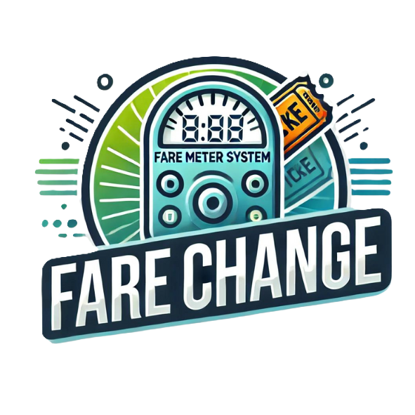

<!DOCTYPE html>
<html lang="en">
<head>
    <meta charset="UTF-8">
    <meta name="viewport" content="width=device-width, initial-scale=1.0">
    <title>Fare Change Advocacy</title>
<style>
          body {
            margin: 0;
            font-family: Arial, sans-serif;
            background-color: #d3f9d8;
            scroll-behavior: smooth;
          }
          .header {
            display: flex;
            align-items: center;
            justify-content: space-between;
            padding: 10px 20px;
            background-color: #d3f9d8;
            border-bottom: 2px solid #050044;
          }
          .header .logo img {
            height: 100px;
          }
          .header .title-box h1 {
            margin: 0;
            color: #000000;
          }
          .header .title-box .explore-button {
            margin-top: 10px;
            padding: 10px 20px;
            background-color: #000000;
            color: #ffffff;
            border: none;
            cursor: pointer;
            text-decoration: none;
            font-weight: bold;
            transition: all 0.3s ease;
          }
          .image-background {
            position: relative;
            width: 100%;
            height: 60vh;
            background-image: url('1670.4.jpg');
            background-size: cover;
            background-position: center;
            margin: 0 auto;
            transition: all 0.3s ease;
          }
          .header .title-box .explore-button:hover {
            background-color: #002244;
            text-decoration: underline;
            opacity: 0.8;
          }
          .image-background::after {
            content: '';
            position: absolute;
            top: 0;
            left: 0;
            width: 100%;
            height: 100%;
            background-color: rgba(0, 0, 0, 0.5);
          }
          .text-box {
            position: absolute;
            top: 50%;
            left: 50%;
            transform: translate(-50%, -50%);
            width: 80%;
            padding: 20px;
            background-color: rgba(0, 0, 0, 0.5);
            border-radius: 15px;
            text-align: center;
            z-index: 1;
            color: white; 
          }
          .text-box h1, .text-box p {
            color: white; 
          }
          .text-box .explore-button {
            margin-top: 10px;
            padding: 10px 20px;
            background-color: #ffffff46;
            color: #ffffff;
            border: none;
            cursor: pointer;
            text-decoration: none;
            font-weight: bold;
            border-radius: 15px;
            transition: all 0.3s ease;
          }
          .text-box .explore-button:hover {
            background-color: #ffffff;
            color: #000000;
            text-decoration: underline;
            opacity: 0.8;
          }
          .navbar {
            width: 100%;
            background-color: #000000;
            overflow: hidden;
            padding: 20px 0;
            text-align: center;
            position: sticky;
            top: 0;
            z-index: 1000;
            white-space: nowrap;
          }
          .navbar ul {
            list-style-type: none;
            margin: 0;
            padding: 0;
            display: inline-block;
            vertical-align: middle;
          }
          .navbar ul li {
            display: inline;
            margin: 0 20px;
          }
          .navbar ul li a {
            text-decoration: none;
            color: #ffffff;
            font-weight: bold;
            font-size: 1em;
            transition: all 0.3s ease;
            white-space: nowrap;
          }
          .navbar ul li a:hover {
            background-color: #ffffff;
            color: #000000;
            text-decoration: underline;
            opacity: 0.8;
            padding: 10px 20px;
            border-radius: 15px;
          }
          .navbar ul li.home {
            display: none;
          }
          .content {
            padding: 20px;
            background-color: #ffffff;
          }
          @media (max-width: 768px) {
            .text-box {
              width: 90%;
            }
            .navbar ul li {
              margin: 0 10px;
            }
            .navbar ul li a {
              font-size: 0.9em;
            }
          }
          .navbar ul li a.active,
          .navbar ul li a.hover {
            background-color: #ffffff;
            color: #000000;
            text-decoration: underline;
            opacity: 0.8;
            padding: 10px 20px;
            border-radius: 15px;
          }
          footer {
            position: fixed;
            bottom: 0;
            left: 0;
            right: 0;
            text-align: center;
            padding: 20px;
            background-color: #000000;
            color: white;
            width: 100%;
            box-sizing: border-box;
          }
</style>
</body>
<script>
        function debounce(func, wait) {
                let timeout;
                return function(...args) {
                        const later = () => {
                                clearTimeout(timeout);
                                func(...args);
                        };
                        clearTimeout(timeout);
                        timeout = setTimeout(later, wait);
                };
        }

        window.addEventListener('scroll', debounce(function() {
                const homeLink = document.querySelector('.navbar ul li.home');
                if (homeLink) {
                        if (window.scrollY === 0) {
                                homeLink.style.display = 'none';
                        } else {
                                homeLink.style.display = 'inline';
                        }
                }

                const sections = document.querySelectorAll('section');
                const navLinks = document.querySelectorAll('.navbar ul li a');

                let currentSection = '';
                sections.forEach(section => {
                        const sectionTop = section.offsetTop;
                        if (pageYOffset >= sectionTop - 60) {
                                currentSection = section.getAttribute('id');
                        }
                });

                navLinks.forEach(link => {
                        link.classList.remove('active');
                        if (link.getAttribute('href').includes(currentSection)) {
                                link.classList.add('active');
                        }
                });
        }, 100));

        document.addEventListener('DOMContentLoaded', function() {
                const navLinks = document.querySelectorAll('.navbar ul li a');
                navLinks.forEach(link => {
                        link.addEventListener('mouseenter', function() {
                                this.classList.add('hover');
                        });
                        link.addEventListener('mouseleave', function() {
                                this.classList.remove('hover');
                        });
                });
        });
</script>
</html>

<div class="image-background">
        <div class="text-box">
                <h1>Welcome to Fare Change Advocacy</h1>
                <p>Promoting fairness in every ride, one fare at a time.</p>
                <a href="#what-is-it" class="explore-button">Explore</a>
        </div>
</div>

<div class="navbar">
        <ul>
                <li class="home"><a href="#">Home</a></li>
                <li><a href="#what-is-it">What Is It</a></li>
                <li><a href="#vision">Our Vision</a></li>
                <li><a href="#process">The Process</a></li>
                <li><a href="#contact">Contact Us</a></li>
        </ul>
</div>

<div class="content">
    <section id="home" style="text-align: center;">
        <video width="50%" height="auto" autoplay muted loop style="border-radius: 15px;">
            <source src="ADVOCACY JOHR.mp4" type="video/mp4">
            Your browser does not support the video tag.
        </video>
        <br>
        <br>
        <br>
        <hr>
    </section>

    <section id="what-is-it">
        <br>
        <br>
        <br>
    <h1 style="font-size: 30px; color: #000000;">What Is It and How It Works</h1>
    <p style="color: #000000;">A systematic transportation fare structure is a transparent and equitable pricing mechanism designed to ensure fairness for passengers and transportation providers. By using dynamic factors such as distance, time, and fuel prices, this system ensures fares reflect the true cost of service while remaining predictable and transparent.</p>

    <ol style="color: #000000;">
        <li>
            <h2>Base Fare</h2>
            <p><strong>Definition:</strong> The base fare is a fixed, initial fee charged at the start of a trip.</p>
            <p><strong>Purpose:</strong> It covers fundamental operational costs, including vehicle maintenance, driver wages, and administrative expenses, ensuring financial sustainability for providers.</p>
            <p><strong>Application:</strong> The base fare remains constant for all trips, providing passengers with a clear understanding of the minimum cost before travel begins.</p>
        </li>
        <li>
            <h2>Distance and Time Factors</h2>
            <h3>Distance-Based Adjustments:</h3>
            <ul style="line-height: 1.8;">
                <li>Fares increase proportionally to the distance traveled.</li>
                <li>Modern GPS technology calculates precise distances, ensuring passengers only pay for the actual distance of their journey.</li>
            </ul>
            <h3>Time of Day:</h3>
            <ul style="line-height: 1.8;">
                <li>Adjustments account for peak and off-peak hours. For example, fares may be higher during rush hours due to increased demand.</li>
                <li>Off-peak discounts encourage ridership during less busy times, balancing system usage.</li>
            </ul>
            <h3>Duration-Based Adjustments:</h3>
            <ul style="line-height: 1.8;">
                <li>In areas with heavy traffic or delays, duration-based pricing ensures fairness by factoring in the time it takes to complete the trip.</li>
                <li>This approach compensates drivers for time spent in congestion while keeping fares reasonable for passengers.</li>
            </ul>
        </li>
        <li>
            <h2>Fuel Adjustment</h2>
            <h3>Real-Time Updates:</h3>
            <ul style="line-height: 1.8;">
                <li>Fare adjustments are linked to current fuel prices, ensuring fairness in fluctuating economic conditions.</li>
                <li>When fuel prices rise, incremental surcharges protect providers from financial losses. Conversely, fare reductions during fuel price drops pass savings to passengers.</li>
            </ul>
            <h3>Transparency:</h3>
            <ul style="line-height: 1.8;">
                <li>Fuel adjustments are calculated automatically and displayed clearly, preventing hidden charges and fostering trust between riders and operators.</li>
            </ul>
            <h3>Stability for Drivers and Operators:</h3>
            <ul style="line-height: 1.8;">
                <li>Real-time adjustments prevent revenue instability, enabling providers to maintain operations even during economic challenges.</li>
            </ul>
        </li>
        <li>
            <h2>How It Benefits Everyone</h2>
        </li>
    </ol>
    <ul style="line-height: 1.8; color: #000000;">
      <li><strong>For Passengers:</strong> Provides clarity, predictability, and fairness in pricing, ensuring they pay only for what they use.</li>
      <li><strong>For Providers:</strong> Covers operational costs dynamically, protecting revenue streams from economic fluctuations.</li>
      <li><strong>For the System:</strong> Promotes trust and efficiency, encouraging more people to use public transportation.</li>
    </ul>
    <p style="color: #000000;">This fare structure balances affordability, operational sustainability, and transparency, creating a public transportation system that meets the needs of both commuters and operators effectively.</p>
      <br>
      <br>
      <br>
      <hr>
    </section>

    <section id="vision">
        <br>
        <br>
        <br>
      <h1 style="font-size: 30px; color: #000000;">Our Vision: A Fair and Transparent Fare System</h1>
      <p style="color: #000000;">Our vision is to revolutionize public transportation through a fare system that eliminates unfair practices, ensures transparency, and balances the needs of both passengers and providers. This system is designed to promote equity, reliability, and sustainability by addressing common issues such as unpredictable pricing, hidden fees, and operational inefficiencies.</p>
      <h4 style="color: #000000;">Eliminate Unfair Fares</h4>
      <ul style="line-height: 1.8; color: #000000;">
        <li><strong>Equitable Pricing:</strong> The system ensures that passengers are charged fairly based on measurable factors such as distance traveled and time of day. It eliminates arbitrary or inconsistent pricing practices that often burden commuters.</li>
        <li><strong>Transparent Fare Structures:</strong> With detailed fare breakdowns provided in real time, passengers can see exactly how their fare is calculated, fostering trust in the transportation system.</li>
        <li><strong>Accessibility:</strong> Special discounts for vulnerable groups, such as students, senior citizens, and persons with disabilities, ensure that the system caters to everyone’s needs without bias.</li>
      </ul>
      <h4 style="color: #000000;">Predictable Fares</h4>
      <ul style="line-height: 1.8; color: #000000;">
        <li><strong>For Passengers:</strong>
          <ul>
            <li>Passengers can plan their budgets confidently, knowing that fares are consistent and predictable.</li>
            <li>Dynamic adjustments, such as fuel surcharges or peak-hour pricing, are communicated in advance, preventing unexpected costs.</li>
          </ul>
        </li>
        <li><strong>For Drivers and Operators:</strong>
          <ul>
            <li>A predictable revenue stream allows operators to manage finances effectively, ensuring business sustainability.</li>
            <li>Fare adjustments linked to factors like fuel prices protect drivers from revenue losses during economic fluctuations.</li>
          </ul>
        </li>
      </ul>
      <h4 style="color: #000000;">Covers Operational Costs</h4>
      <ul style="line-height: 1.8; color: #000000;">
        <li><strong>Fair Compensation for Providers:</strong> The system ensures that transportation providers can cover expenses such as fuel, maintenance, and wages without imposing hidden fees or surcharges on passengers.</li>
        <li><strong>Balanced Cost Sharing:</strong> While passengers enjoy affordable fares, providers maintain the financial stability needed to deliver reliable services.</li>
        <li><strong>Encourages Modernization:</strong> Stable revenue enables operators to invest in vehicle upgrades, technological advancements, and improved services, creating a better commuting experience.</li>
      </ul>
      <h4 style="color: #000000;">A Sustainable Future</h4>
      <p style="color: #000000;">By addressing unfair pricing, ensuring predictability, and securing operational cost coverage, this vision creates a win-win scenario for passengers and providers. It builds a transportation system that is fair, efficient, and transparent, laying the foundation for long-term trust and sustainability in public transport.</p>
      <br>
      <br>
      <br>
      <hr>
    </section>

    <section id="process">
        <br>
        <br>
        <br>
    <h2 style="font-size: 30px; color: #000000;">How to Achieve This Vision</h2>
    <p style="color: #000000;">Achieving a transparent, fair, and systematic transportation fare structure requires collaboration, innovation, and community engagement. Here’s how we can bring this vision to life:</p>
    <ol style="line-height: 1.8; color: #000000;">
      <li>
        <h3>Partner with Local Governments</h3>
        <p><strong>Collaborate on Pilot Programs:</strong></p>
        <ul>
        <li>Partner with local government units (LGUs) to implement small-scale pilot programs in selected areas.</li>
        <li>Use these pilots to test the system’s feasibility, identify challenges, and refine operations before a full-scale rollout.</li>
        </ul>
        <p><strong>Policy Development:</strong></p>
        <ul>
        <li>Work with policymakers to create laws and ordinances mandating fare transparency.</li>
        <li>Include provisions for dynamic fare adjustments, ensuring the system is adaptable to economic and environmental factors.</li>
        </ul>
        <p><strong>Funding Support:</strong></p>
        <ul>
        <li>Secure government grants or subsidies to help transport providers transition to the new fare system and adopt necessary technology.</li>
        </ul>
      </li>
      <li>
        <h3>Work with Transport Companies</h3>
        <p><strong>Engage Operators Across Sectors:</strong></p>
        <ul>
        <li>Collaborate with ride-hailing platforms, taxi operators, and jeepney associations to integrate the fare system into their services.</li>
        <li>Provide training programs for drivers and operators to understand and adopt the system.</li>
        </ul>
        <p><strong>Incentivize Participation:</strong></p>
        <ul>
        <li>Offer incentives, such as reduced licensing fees or tax breaks, to encourage early adoption.</li>
        <li>Highlight the long-term benefits of predictable revenue and increased customer trust to gain buy-in from stakeholders.</li>
        </ul>
      </li>
      <li>
        <h3>Public Education</h3>
        <p><strong>Awareness Campaigns:</strong></p>
        <ul>
        <li>Launch multimedia campaigns, including social media, print, and radio advertisements, to inform the public about the system.</li>
        <li>Focus on how the fare system ensures fairness, predictability, and transparency for both riders and providers.</li>
        </ul>
        <p><strong>Community Engagement:</strong></p>
        <ul>
        <li>Conduct workshops, forums, and town hall meetings to address commuter concerns and explain how the system works.</li>
        <li>Distribute informational brochures and guides to educate passengers on fare calculations and adjustments.</li>
        </ul>
        <p><strong>Feedback Mechanisms:</strong></p>
        <ul>
        <li>Create channels for passengers to share feedback, enabling continuous improvements to the system.</li>
        </ul>
      </li>
      <li>
        <h3>Leverage Technology</h3>
        <p><strong>Develop Apps:</strong></p>
        <ul>
        <li>Create user-friendly mobile apps for commuters to calculate fares in real time.</li>
        <li>Include features such as GPS tracking, fare breakdowns, and digital payment options for a seamless experience.</li>
        </ul>
        <p><strong>Digital Meters for Vehicles:</strong></p>
        <ul>
        <li>Equip taxis, jeepneys, and other public transport vehicles with digital meters that calculate fares dynamically based on distance, time, and fuel prices.</li>
        <li>Ensure these devices are tamper-proof to maintain transparency and accuracy.</li>
        </ul>
        <p><strong>Real-Time Monitoring:</strong></p>
        <ul>
        <li>Establish centralized monitoring systems that track fare adjustments and ensure compliance with policies.</li>
        </ul>
      </li>
    </ol>
    <p style="color: #000000;">A Collaborative Effort for Success</p>
    <p style="color: #000000;">By uniting governments, transport providers, and the public, and integrating advanced technology, this vision of a transparent and equitable fare system becomes achievable. Together, we can build a transportation network that prioritizes fairness, efficiency, and sustainability, benefiting everyone involved.</p>
      <br>
      <br>
      <br>
      <hr>
    </section>

    <section id="contact">
        <br>
        <br>
        <br>
    <h2 style="font-size: 30px; color: #000000; text-align: center;">Contact Us</h2>
    <p style="color: #000000; text-align: center;">Thank you for your interest in supporting jeepney modernization! If you have questions or want to get involved, feel free to reach out to us at:</p>
    <p style="color: #000000; text-align: center;">Email: <a href="mailto:support@farechange.org" style="color: #000000; text-decoration: none;">support@farechange.org</a></p>
<p style="color: #000000; text-align: center;"><strong>We’d love to hear from you!</strong></p></section>
    <br>
    <br>
    <br>
<hr>
<div style="text-align: center;">
    
</div>
<div style="text-align: center;"></div>
<footer>
</div>
<footer style="position: fixed; bottom: 0; left: 0; right: 0; text-align: center; padding: 20px; background-color: #000000; color: white; width: 100%; box-sizing: border-box;">
    <p style="font-size: 20px; margin: 0;">Together for Progress | Advocating for Fair, Transparent, and Sustainable Transportation – 2024 and Beyond.</p>
</footer>

</body>
</html>
